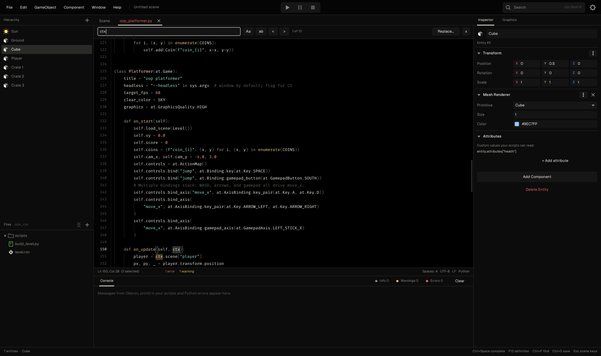

The code editor
Oberon has a native code editor built in, so you can write scripts without leaving the scene. Scripts open as tabs next to the Scene tab. Press Esc to go back to the scene view; the tab stays open.

Open a script#
- Double-click a
.pyfile in Files (left sidebar). - File → New Script… / Open Script….
- Right-click an entity → Edit Script.
- Click a file:line link in the Console.
- Ctrl+E (Go to File): type part of a script name. Open scripts come first, most recent first. The command palette (Ctrl+Shift+P) finds scripts too.
Tabs#
The keys are the same as in VS Code, and they also work while the Scene tab is showing:
- Ctrl+Tab shows your open tabs in the order you last used them. Keep Ctrl held and press Tab again to go further back; let go to switch.
- Ctrl+PgUp / Ctrl+PgDn steps through the tabs in strip order. Alt+1…9 jumps to a tab by position (the Scene is Alt+1).
- Ctrl+W closes a tab, and Ctrl+Shift+T brings back the last one you closed. When you close the active tab, Oberon shows the tab you used before it.
- Middle-click a tab to close it, or drag it to reorder. Right-click a tab for Close Others, Close to the Right, Close Saved, Copy Path and Reveal in Files. When there are too many tabs to fit, scroll the strip with the wheel.
Editing#
You get what you'd expect from a modern editor:
- Python syntax highlighting
- auto-indent after
: - bracket and quote pairing
- line moves, duplicates, and comments
- indentation guides
- current-line highlight
- multi-line paste that keeps relative indentation
- multiple carets: Ctrl+D adds the next match of the selected word, Ctrl+Shift+L selects every match, Alt+click adds a caret, and Ctrl+Alt+↑/↓ adds one above or below. Every caret types at once, and one Ctrl+Z undoes the whole edit.
The full key list is in Keyboard shortcuts.
Find / Replace (Ctrl+F / Ctrl+H) supports case-sensitive and whole-word matching, shows match counts, and can replace all at once.
The status line shows the cursor position, selection size, diagnostics counts, indentation, encoding, and line endings.
Completion#
Completion is built in and needs no setup. It knows the scripting API:
ctx.→time,input,scene,camera,physics,log, …entity.transform.→position,rotation_euler,scale, …ctx.camera./entity.camera.→position,target,fov,look_at,follow- inside
ctx.input.pressed(": every key name - inside
ctx.scene[": the names of the entities in your scene - inside
entity.attributes[": the attribute names you've defined
Each suggestion has an icon for its kind: a cube for functions and methods,
[▪] for variables, linked boxes for classes, a tag for properties,
{ } for modules, a boxed = for constants, and lines for keywords.
Suggestions appear as you type. Turn that off in Settings → Script Editor if you'd rather press Ctrl+Space. Hover a name for its documentation.
Language servers#
If a Python language server is installed, Oberon starts it when you open a script. It adds:
- diagnostics (squiggles plus the status-line counts)
- richer completion
- hover
- F12 go to definition
Oberon looks for these, in order: basedpyright, pyright, pylsp, jedi-language-server.
pip install basedpyright # recommendedSettings → Python → Language server shows which one is running and has a Restart server button.
Settings#
Settings → Script Editor has these options:
- font size
- Editor scale: zooms only the code editor (text, gutter, find bar, popups and status line) and leaves the rest of the interface alone. You can also hold Ctrl and use the wheel over the editor. The whole-interface zoom is Settings → Appearance → Interface scale.
- current-line highlight
- indentation guides
- whitespace markers
- suggest while typing
- trim trailing whitespace on save
- Save scripts before Play, on by default, so Play always runs what you see
Prefer another editor? Edit the files in VS Code, Vim, or anything else. Oberon hot-reloads saved scripts during Play either way.